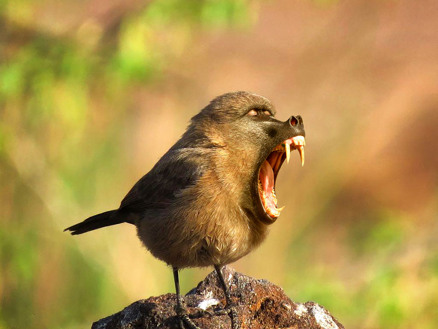

Prateria di Levi: scoperto lo Scimpassero
"Increddibbile!" dice R. Bandiera.Alcuni non sono ancora al corrente della notizia

Elensefar. Il primo avvistamento registrato dello Scimpassero è stato fatto nel primo pomeriggio di ieri da un gruppo di ricercatori che esploravano la vastità della prateria di Levi (Provincia di Elensefar). Mentre si facevano strada attraverso la folta vegetazione, sono stati spaventati dal movimento improvviso di una figura oscura che schizzava con rapidità nella distesa. I ricercatori non sono riusciti a vedere chiaramente la creatura, ma sono riusciti a catturare un breve scorcio di essa con la loro fotocamera prima che scomparisse nel sottobosco.
Negli scorsi mesi sono state posizionate telecamere e dispositivi di monitoraggio nel tentativo di catturare ulteriore materiale sullo Scimpassero. Finalmente, i loro sforzi sono stati premiati quando sono riusciti a catturare un'immagine nitida della creatura su pellicola.
Lo Scimpassero è un volatile piccolo e snello con un muso allungato e dentatura vigorosa. Ha una struttura agile e slanciata, con potenti zampe. Il suo pelo è di un marrone chiaro, perfettamente adattato per il mimetismo nel suo habitat brullo e arido.
La scoperta dello Scimpassero ha generato una grande eccitazione e curiosità, con gli scienziati ansiosi di studiare questa rara creatura. Ulteriori ricerche sono in corso per saperne di più sull'habitat, il comportamento e la biologia generale dello Scimpassero. Si spera che questa nuova scoperta possa fare luce sulla straordinaria diversità della vita nella prateria della Provincia di Elensefar e dei Territori di Confine e fornire preziose informazioni sull'evoluzione di questo animale unico e affascinante.
27 dicembre 2022
Riproduzione riservata
Orazio Grinzosi
11:28, 27 dicembre 2022
We wagliò, bello 'sto Scimpassero!! Saluti da Castellammare di Stabiaaaaaaaaaaaaaaaaaaaaaaaaaaaaaaaaaaaaaaaaaaaaaaaaaaaaaaaaaaaaaaaaaaaaaaaaaaaaaaaaaaaaaaaaaaaaaaaaaaaaaaaaaaaaaaaaaaaaaaaaaaaaaaaaaaaaaaaaaaaaaaaaaaaaaaaaaaaaaaaaaaaaaaaaaaaaaaaaaaaaaaaaaaaaaaaaaaaaaaaaaaaaaaaaaaaaaaaaaaaaaaaaaaaaaaaaaaaaaaaaaaaaaaaaaaaaaaaaaaaaaaaaaaaaaaaaaaaaaaaaaaaaaaaaaaaaaaaaaaaaaaaaaaaaaaaaaaaaaaaaaaaaaaaaaaaaaaaaaaaaaaaaaaaaaaaaaaaaaaaaaaaaaaaaaaaaaaaaaaaaaaaaaaaaaaaaaaaaaaaaaaaaaaaaaaaaaaaaaaaaaaaaaaaaaaaaaaaaaaaaaaaaaaaaaaaaaaaaaaaaaaaaaaaaaaaaaaaaaaaaaa
Lorenzo Letame
11:31, 27 dicembre 2022
go being Neapolitan somewhere else
Orazio Grinzosi
11:31, 27 dicembre 2022
fottiti porcodio
global communication
11:28, 27 dicembre 2022
global communication - 76:14 the GOAT no CAP